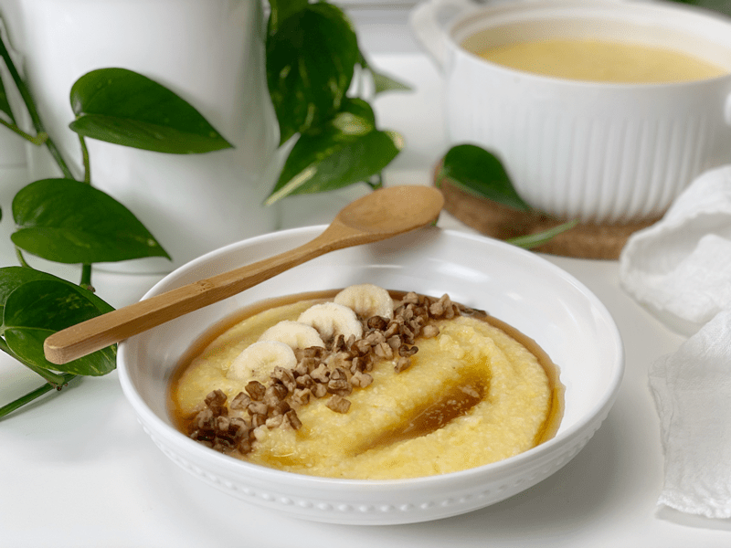

Italian Corn Porrdige | Plates of Inspiration
Today’s breakfast bowl was dished up for Bob. One of the many things I love about that man is his enjoyment of every dish I set down before him. Sometimes he asks what it is, but he’s not intimidated to dive in without hesitation. It’s a simple bowl of Italian Corn Porridge, maple syrup, chopped activated pecans, and sliced banana. Satiating, delicious, and filled with love. Be blessed and make the best of every dish you set down before yourself and your loved ones. amie sue

© AmieSue.com